MGMT 30500: Business Statistics
Time Series and Forecasting
Overview
- Time Series and Time Series Patterns
- Forecast Accuracy – Definitions
- Naïve Forecasting Method
- Moving Averages
- Exponential Smoothing
- Lag Variables
- Trend Projection
- Seasonality without Trend
- Seasonality and Trend
Time Series
Time Series
Time series are especially important in business applications since they are involved in forecasting (revenues, expenses, stock prices, inventory levels, etc.).
A time series is a sequence of measurements (of a variable) taken every hour, day, week, month, quarter, year, or any other regular time interval.
The pattern of the data is crucial for understanding how the time series has behaved over time.
If such behavior can be expected to continue in the future, we can use it to select an appropriate forecasting method.
Forecasting Methods
Forecasting Methods
Forecasting Methods: Qualitative
Forecasting methods can be classified as qualitative or quantitative.
Qualitative methods generally involve expert judgment to develop forecasts.
- Such methods are appropriate when historical data are not applicable or unavailable.
We will focus on quantitative forecasting methods.
Forecasting Methods: Quantitative
Quantitative forecasting methods can be used when:
- Past information about the variable being forecast is available,
- The information can be quantified,
- It is reasonable to assume that the pattern of the past will continue.
In such cases, a forecast can be developed using a time series or a causal method.
Forecasting Methods: Quantitative
Quantitative methods are based on an analysis of historical data concerning one or more time series.
A time series is a set of observations measured at successive points in time.
Time Series Method: Restricts data to past values of the series.
Causal Method: Uses other time series believed to be related to the time series to be forecasted.
Forecasting Methods: Quantitative
Time Series Analysis
- The objective is to discover a pattern in historical data and extrapolate it into the future.
- The forecast is based solely on past values of the variable or past forecast errors.
Forecasting Methods: Quantitative
Causal Methods
- Assumes the variable being forecasted has a cause-effect relationship with other variables.
- Regression analysis can be used to forecast the time series value as the dependent variable.
- Identifying related independent variables can help in developing a regression equation for forecasting.
Forecasting Methods: Quantitative
Regression Analysis: Time is treated as the independent variable, and the time series as the dependent variable.
Time-Series Regression: The sole independent variable is time.
Cross-Sectional Regression: The independent variables are something other than time.
Time Series Plot
Time Series Plot
The first step in selecting an appropriate forecasting method is to construct a time series plot to identify patterns.
A time series plot is a graphical presentation of the relationship between time and the time series variable.
It is a scatterplot where time is on the horizontal axis, and the time series values are on the vertical axis.
Time Series Plot: Example
Gasoline sale time series
The number of gallons of gasoline sold by a gasoline distributor over a period of 12 weeks is given in the table below. The distributor would like to identify the underlying pattern in the data to guide it in selecting an appropriate forecasting method.
| Week | Sales |
|---|---|
| 1 | 17 |
| 2 | 21 |
| 3 | 19 |
| 4 | 23 |
| 5 | 18 |
| 6 | 16 |
| 7 | 20 |
| 8 | 18 |
| 9 | 22 |
| 10 | 20 |
| 11 | 15 |
| 12 | 22 |
Time Series Plot: Example
Gasoline sales time series

Time Series Patterns
Time Series Patterns
The common types of data patterns that can be identified when examining a time series plot include:
- Horizontal
- Trend
- Seasonal
- Trend and Seasonal
- Cyclical
Time Series Patterns: Horizontal Pattern
A horizontal pattern exists when the data fluctuate around a constant mean.
Changes in business conditions can often result in a time series that shifts to a new level.
It is more difficult to choose an appropriate forecasting method to identify a change in the level of the time series. (The Change-time problem.)

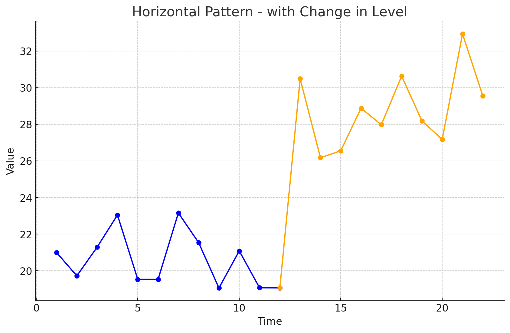
Time Series Patterns: Horizontal Pattern
Stationary Time Series
The term stationary time series is used to denote a time series whose statistical properties are independent of time. In particular, this means that:
The process generating the data has a constant mean.
The variability of the time series is constant over time.
A time series plot for a stationary time series will always exhibit a horizontal pattern. But simply observing a horizontal pattern is not sufficient evidence to conclude that the time series is stationary.
More advanced texts on forecasting discuss procedures for determining if a time series is stationary and provide methods for transforming a time series that is not stationary into a stationary series.
Time Series Patterns: Trend Pattern
A time series may show gradual drifts or movements to relatively higher or lower values over a longer period of time.
Trend is usually the result of long-term factors such as changes in the population, demographics, technology, or consumer preferences.
A trend pattern can be identified by analyzing multiperiod movements in historical data.
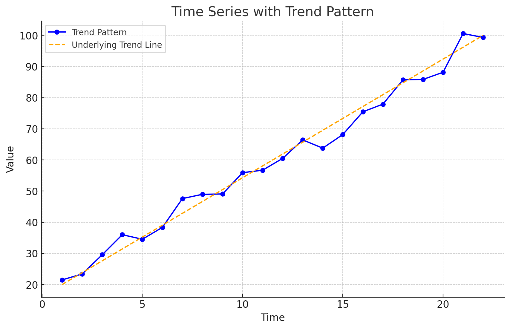
Time Series Patterns: Seasonal Pattern
Seasonal patterns are recognized by seeing the same repeating pattern of highs and lows over successive periods of time (within a “short” period of time).
A seasonal pattern might occur within a day, week, month, quarter, or year.
A seasonal pattern does not necessarily refer to the four seasons of the year.
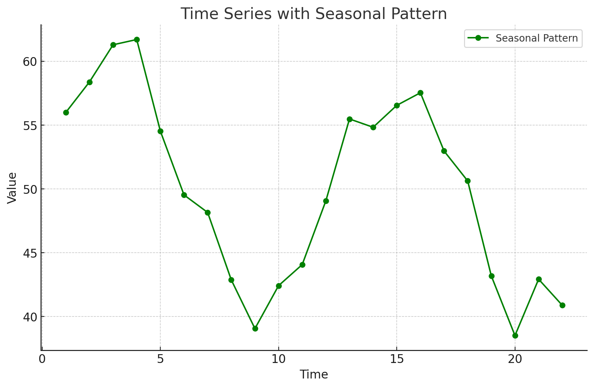
Time Series Patterns: Trend and Seasonal Pattern
Some time series include a combination of a trend and seasonal pattern.
Time series decomposition can be used to separate or decompose a time series into trend and seasonal components.

Time Series Patterns: Cyclical Pattern
A cyclical pattern exists if the time series plot shows an alternating sequence of points below and above the trend line lasting more than one year.
Often, the cyclical component of a time series is due to multiyear business cycles.
Business cycles are difficult, if not impossible, to forecast.
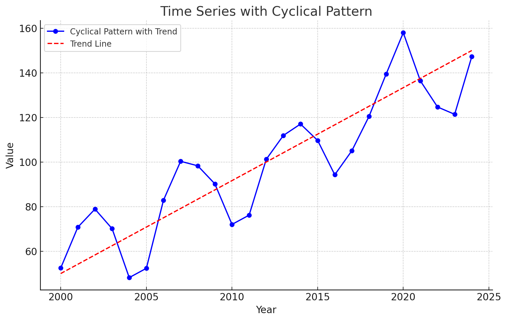
Time Series Plot
Using Excel’s Chart Tools to Construct a Time Series Plot
A time series plot is simply a scatter diagram with lines connecting the points.
Steps
Select cells A2:B13 in the
Gasoline.xlsxfile.Click the Insert tab on the Ribbon
In the Charts group, click the Insert Scatter (X, Y) or Bubble Chart button
When the list of scatter diagram subtypes appears:
- Click the Scatter with Straight Lines and Markers button
The time series plot produced by Excel will appear in the same worksheet.
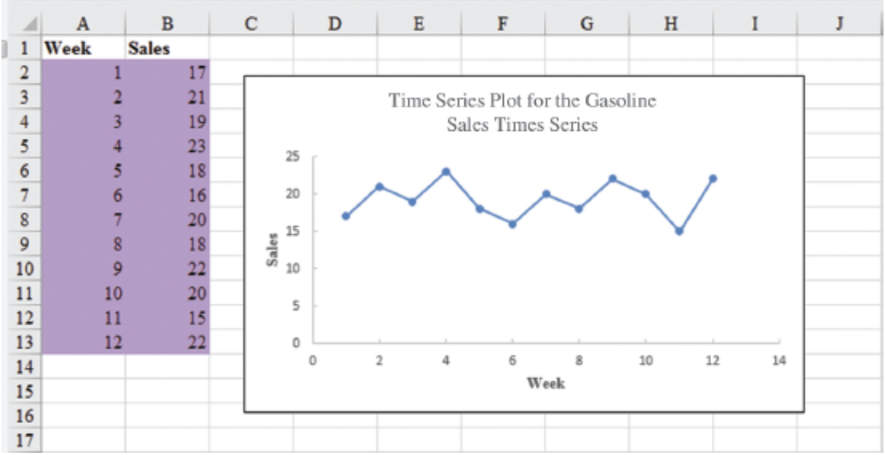
Selecting a Forecasting Method
Selecting a Forecasting Method
The underlying pattern in the time series is an important factor in selecting a forecasting method.
A time series plot should be one of the first tools developed to determine what forecasting method to use.
If we see a horizontal pattern, then we need to select a method appropriate for this type of pattern.
If we observe a trend in the data, then we need to use a method that can handle the trend effectively.
Forecast Accuracy
Forecast Accuracy
Measures of forecast accuracy are used to determine how well a particular forecasting method can reproduce the time series data that we already have.
Forecast accuracy measures are important factors in comparing different forecasting methods.
By selecting the method that has the best accuracy, we will obtain better forecasts for future time periods.
Forecast Accuracy
- The key concept associated with measuring forecast accuracy is forecast error:
\[ \text{Forecast Error} = \text{Actual Observed Value} - \text{Forecast} \]
\[ \text{Residual} = \text{Observed} - \text{Predicted} \]
A positive forecast error indicates the forecasting method underestimated the actual value.
A negative forecast error indicates the forecasting method overestimated the actual value.
A forecast error is basically a residual.
Forecast Accuracy
Mean Error (ME): ME is the mean or average of the forecast errors. Because positive and negative forecast errors tend to offset one another, the mean error is likely to be small. Thus, the mean error is not a very useful measure.
Mean Absolute Error (MAE): MAE avoids the problem of positive and negative errors offsetting one another. It is the mean of the absolute values of the forecast errors.
Forecast Accuracy
Mean Squared Error (MSE): MSE also avoids the problem of positive and negative errors offsetting one another. It is the average of the squared forecast errors.
Mean Absolute Percentage Error (MAPE): The size of MAE and MSE depend upon the scale of the data, so it is difficult to make comparisons for different time periods. To make such comparisons, we need to work with relative or percentage error measures. Percentage Error is the error divided by the observed value of the time series. The MAPE is the average of the absolute percentage errors of the forecasts.
Forecast Accuracy: Example Naïve Forecast
To demonstrate the computation of these measures of forecast accuracy, let’s introduce the simplest of forecasting methods: the naïve forecasting method
The naïve forecasting method uses only the most recent observation in the time series as the forecast for the next time period.
\[ F_{t+1} = Y_t, \text{ the actual observed value in period } t \]
Forecast Accuracy: Example Naïve Forecast
Gasoline sale time series
| Week | Observed Time series | Naïve Forecast | Forecast error | Absolute value of forecast error | Squared forecast error | Percentage error | Absolute value of percentage error |
|---|---|---|---|---|---|---|---|
| 1 | 17 | ||||||
| 2 | 21 | 17 | 4 | 4 | 16 | 19.05 = \(\frac{4}{21}\) | 19.05 |
| 3 | 19 | 21 | -2 | 2 | 4 | -10.53 | 10.53 |
| 4 | 23 | 19 | 4 | 4 | 16 | 17.39 | 17.39 |
| 5 | 18 | 23 | -5 | 5 | 25 | -27.78 | 27.78 |
| 6 | 16 | 18 | -2 | 2 | 4 | -12.5 | 12.5 |
| 7 | 20 | 16 | 4 | 4 | 16 | 20.00 | 20.00 |
| 8 | 18 | 20 | -2 | 2 | 4 | -11.11 | 11.11 |
| 9 | 22 | 18 | 4 | 4 | 16 | 18.18 | 18.18 |
| 10 | 20 | 22 | -2 | 2 | 4 | -10.00 | 10.00 |
| 11 | 15 | 20 | -5 | 5 | 25 | -33.33 | 33.33 |
| 12 | 22 | 15 | 7 | 7 | 49 | 31.82 | 31.82 |
| Totals | 5 | 41 | 179 | 1.19 | 211.69 |
Week 2: the postive forecast error indicates that the forecasting method underestimated the actual value of sales.
Week 3: the negative forecast error indicates that the forecasting method overestimated the actual value of sales.
Forecast Accuracy: Example Naïve Forecast
Gasoline sale time series: Naive Forecast Accuracy
- Mean Absolute Error (MAE): It is the mean of the absolute values of the forecast errors.
\[ \text{MAE} = \frac{41}{11} = 3.73 \]
- Mean Squared Error (MSE): It is the average of the squared forecast errors.
\[ \text{MSE} = \frac{179}{11} = 16.27 \]
The size of MAE and MSE depends upon the scale of the data. So, it is not recommended to make comparisons for different time intervals (e.g. months vs weeks).
To make comparisons like these we need relative or percentage error measues like MAPE.
Mean Absolute Percentage Error (MAPE): It is the average of the absolute percentage errors of the forecasts.
\[ \text{MAPE} = \frac{211.69}{11} = 19.24\% \]
Forecast Accuracy: Example Historical Data Average
Let’s use the average of all the historical data available as the forecast for the next period.
We begin by developing a forecast for Week 2. Since there is only one historical value available prior to Week 2, the forecast for Week 2 is just the time series value in Week 1. Thus, the forecast for Week 2 is 17 thousand gallons of gasoline.
To compute the forecast for Week 3, we take the average of the sales values in Weeks 1 and 2:
\[ \text{Forecast for week 3} = \frac{17 + 21}{2} = 19 \]
Similarly, the forecast for Week 4 is:
\[ \text{Forecast for week 4} = \frac{17 + 21 + 19}{3} = 19 \]
Forecast Accuracy: Example Historical Data Average
The forecasts obtained using this method for the gasoline time series are:
| Week | Time Series Value | Forecast | Forecast Error | Absolute Value of Forecast Error | Squared Forecast Error | Percentage Error | Absolute Value of Percentage Error |
|---|---|---|---|---|---|---|---|
| 1 | 17 | ||||||
| 2 | 21 | 17.00 | 4.00 | 4.00 | 16.00 | 19.05 | 19.05 |
| 3 | 19 | 19.00 | 0.00 | 0.00 | 0.00 | 0.00 | 0.00 |
| 4 | 23 | 19.00 | 4.00 | 4.00 | 16.00 | 17.39 | 17.39 |
| 5 | 18 | 20.00 | -2.00 | 2.00 | 4.00 | -11.11 | 11.11 |
| 6 | 16 | 19.60 | -3.60 | 3.60 | 12.96 | -22.50 | 22.50 |
| 7 | 20 | 19.00 | 1.00 | 1.00 | 1.00 | 5.00 | 5.00 |
| 8 | 18 | 19.14 | -1.14 | 1.14 | 1.31 | -6.35 | 6.35 |
| 9 | 22 | 19.00 | 3.00 | 3.00 | 9.00 | 13.64 | 13.64 |
| 10 | 20 | 19.33 | 0.67 | 0.67 | 0.44 | 3.33 | 3.33 |
| 11 | 15 | 19.40 | -4.40 | 4.40 | 19.36 | -29.33 | 29.33 |
| 12 | 22 | 19.00 | 3.00 | 3.00 | 9.00 | 13.64 | 13.64 |
| Totals | 4.53 | 26.81 | 89.07 | 2.76 | 141.34 |
Forecast Accuracy: Example Historical Data Average
Using the results shown, we obtained the following values of MAE, MSE, and MAPE:
\[ \text{MAE} = \frac{26.81}{11} = 2.44 \]
\[ \text{MSE} = \frac{89.07}{11} = 8.10 \]
\[ \text{MAPE} = \frac{141.34}{11} = 12.85\% \]
Forecast Accuracy: Comparison of Forecasting Methods
We can now compare the accuracy of the two forecasting methods we have considered by comparing the values of MAE, MSE, and MAPE for each method.
| Naive Method | Average of Past Values | |
|---|---|---|
| MAE | 3.73 | 2.44 |
| MSE | 16.27 | 8.10 |
| MAPE | 19.24% | 12.85% |
For every measure, the average of past values provides more accurate forecasts than using the most recent observation as the forecast for the next period.
If the underlying time series is stationary, the average of all the historical data will generally provide the best results.
If the time series is not stationary, adjustments are needed.
In cases where the time series shifts to a new level (e.g., due to contract changes), the naive method might adapt faster than the averaging method.
Importance of Forecast Accuracy and Adaptability
Measures of forecast accuracy are crucial but should not be the sole basis for choosing a forecasting method.
Consider the business context and the likelihood of changes in the time series level.
Historical forecast accuracy should be weighed alongside the ability of the method to adapt to shifts.
Moving Averages and Exponential Smoothing
Moving Averages and Exponential Smoothing
- Three forecasting methods that are appropriate for a time series with a horizontal pattern:
Moving Averages (MAs)
Weighted Moving Averages
Exponentially Weighted Moving Averages (EWMAs)
They are called smoothing methods because their objective is to smooth out the random fluctuations (due to random errors or noises) in the time series.
They are most appropriate for short-range forecasts.
Moving Averages
Moving Averages
The moving averages method uses the average of the most recent k data values in the time series as the forecast for the next period. Mathematically, a moving average forecast of order k is as follows:
Moving Average Forecast of Order \(k\)
\[ F_{t+1} = \frac{\sum (\text{most recent } k \text{ data values})}{k} = \frac{Y_t + Y_{t-1} + \cdots + Y_{t-k+1}}{k} \]
where:
- \(F_{t+1}\) = forecast of the time series for period \(t + 1\)
- \(Y_t\) = actual value of the time series in period \(t\)
Each observation in the moving average calculation receives the same weight \((1/k)\).
The term moving is used because every time a new observation becomes available for the time series, it replaces the oldest observation in the equation.
As a result, the average will change, or move, as new observations become available.
Moving Averages
To use moving averages to forecast, we must first select the span (the order), which is the number of observed time series values to be included in the moving average.
- A smaller value of k will track shifts in a time series more quickly than a larger value of k.
- A larger value of k, the smoother the MA. Less sensitive to changes in the given time series.
- If more past observations are considered relevant, then a larger value of k is better.
Moving Averages
Example: Gasoline sale time series: three-week moving average (\(k = 3\))
| Week | Time series value | Forecast | Forecast error | Absolute value of forecast error | Squared forecast error | Percentage error | Absolute value of percentage error |
|---|---|---|---|---|---|---|---|
| 1 | 17 | ||||||
| 2 | 21 | ||||||
| 3 | 19 | ||||||
| 4 | 23 | \(\frac{(17 + 21 + 19)}{3} = 19\) | 4 | 4 | 16 | 17.39 | 17.39 |
| 5 | 18 | \(\frac{21 + 19 + 23}{3} = 21\) | -3 | 3 | 9 | -16.67 | 16.67 |
| 6 | 16 | 20 | -4 | 4 | 16 | -25.00 | 25.00 |
| 7 | 20 | 19 | 1 | 1 | 1 | 5.00 | 5.00 |
| 8 | 18 | 18 | 0 | 0 | 0 | 0.00 | 0.00 |
| 9 | 22 | 18 | 4 | 4 | 16 | 18.18 | 18.18 |
| 10 | 20 | 20 | 0 | 0 | 0 | 0.00 | 0.00 |
| 11 | 15 | 20 | -5 | 5 | 25 | -33.33 | 33.33 |
| 12 | 22 | 19 | 3 | 3 | 9 | 13.64 | 13.64 |
| Totals | 0 | 24 | 92 | -20.79 | 129.21 |
Moving Averages
Example: Gasoline sale time series: three-week moving average
\[ \text{MAE} = \frac{24}{9} = 2.67 \]
\[ \text{MSE} = \frac{92}{9} = 10.22 \]
\[ \text{MAPE} = \frac{129.21}{9} = 14.36\% \]
- The three-week moving average approach provided more accurate forecasts than the naïve approach (19.24%).
Moving Averages Plot
Example: Gasoline sales time series: three-week moving average
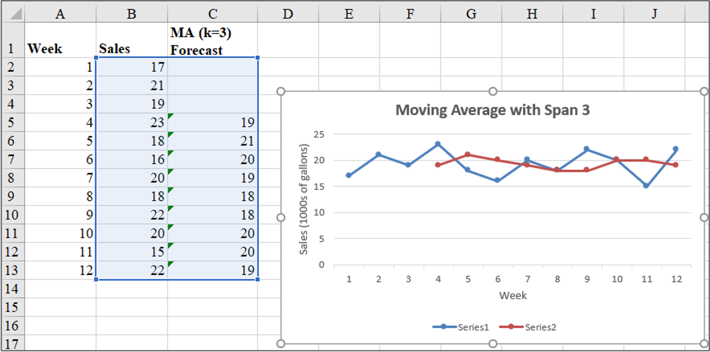
- The Figure shows the original time series plot and the three-week moving average forecasts.
- Note how the graph of the moving average forecasts has tended to smooth out the random fluctuations in the time series.
Moving Averages: Excel
Enter/Access Data: Open the file Gasoline. The data are in cells A2:B13 and labels are in cells A1:B1.
Step 1: Click the Data tab on the Ribbon
Step 2: In the Analyze group, click Data Analysis
Step 3: Choose Moving Average from the list of Analysis Tools and click OK
Step 4: When the Moving Average dialog box appears:
- Enter
B2:B13in the Input Range box - Enter
3in the Interval box - Enter
C3in the Output Range box - Select the check box for Chart Output
- Click OK
- Enter
The three-week moving average forecasts appear in column C of the worksheet; a chart showing the actual values of the time series and the forecasted values also appears. Forecasts for periods of other lengths can be computed easily by entering a different value in the interval box.
Weighted Moving Averages
Weighted Moving Averages
In the moving averages method, each observation in the moving average calculation receives the same weight.
Weighted Moving Averages: we can select a different weight for each data value (e.g. the most recent observations) and then compute a weighted average of the most recent \(k\) values as the forecast.
The more recent observations are typically given more weight than older observations.
For convenience, the weights should sum to 1.
Weighted Moving Averages
For the Gasoline data, a three-period weighted moving average (3WMA) for Week 4 is:
\[ WMA_3 = \frac{1}{6}(17) + \frac{2}{6}(21) + \frac{3}{6}(19) = 19.33 \]
if the weights are \(\frac{1}{6}, \frac{2}{6}, \frac{3}{6}\), which sum to 1.
19 is the most recent of the three observations and receives the largest weight.
To determine whether one particular combination of number of data values and weights provides a more accurate forecast than another combination, it is recommended to use MSE as the measure of the forecast accuracy.
- If we assume that the combination that is best for the past will also be best for the future, we would use the one that minimizes MSE for the historical time series to forecast the next value in the time series.
Exponential Smoothing Forecast
Exponential Smoothing Forecast
The exponential smoothing forecast is a special case of the weighted moving averages.
It is the weighted average of all the time series data up to the current period.
We select only the weight between 0 and 1 for the most recent observation. This weight is called the smoothing constant and is denoted by \(\alpha\).
- \(1 - \alpha\) is called the damping factor.
Single Exponential Smoothing Forecast
\[ F_{t+1} = \alpha Y_t + (1 - \alpha) F_t \]
where
- \(F_{t+1}\) = forecast of the time series for period \(t + 1\)
- \(Y_t\) = actual value of the time series in period \(t\)
- \(F_t\) = forecast of the time series for period \(t\)
- \(\alpha\) = smoothing constant \((0 \leq \alpha \leq 1)\)
There are a number of exponential smoothing procedures.
The term exponential smoothing comes from the exponential nature of the weighting scheme for the historical values.
- The weights assigned to the time series values decrease exponentially as the “age” of the data values increases.
The statistic computed in each period is called the Exponentially Weighted Moving Average (EWMA).
Exponential Smoothing Forecast
Let’s illustrate by working with a time series involving only three periods of data: \(Y_1\), \(Y_2\), and \(Y_3\).
To initiate, let \(F_1\) equal the actual value of the time series in period 1; that is, \(F_1 = Y_1\). Hence, the forecast for period 2 is
\[ \begin{aligned} F_2 &= \alpha Y_1 + (1 - \alpha) F_1 \\ &= \alpha Y_1 + (1 - \alpha) Y_1 \\ &= Y_1 \end{aligned} \]
Thus, the exponential smoothing forecast for period 2 is equal to the actual value of the time series in period 1.
Exponential Smoothing Forecast
The forecast for period 3 is
\[ F_3 = \alpha Y_2 + (1 - \alpha) F_2 = \alpha Y_2 + (1 - \alpha) Y_1 \]
Finally, substituting this expression for \(F_3\) in the expression for \(F_4\), we obtain
\[ \begin{aligned} F_4 &= \alpha Y_3 + (1 - \alpha) F_3 \\ &= \alpha Y_3 + (1 - \alpha)[\alpha Y_2 + (1 - \alpha) Y_1] \\ &= \alpha Y_3 + \alpha (1 - \alpha) Y_2 + (1 - \alpha)^2 Y_1 \end{aligned} \]
Exponential Smoothing Forecast
The term exponential smoothing comes from the exponential nature of the weighting scheme for the historical values.
We now see that \(F_4\) is a weighted average of the first three time series values. The sum of the coefficients, or weights, for \(Y_1\), \(Y_2\), and \(Y_3\) equals 1. A similar argument can be made to show that, in general, any forecast \(F_{t+1}\) is a weighted average of all the previous time series values.
Despite the fact that exponential smoothing provides a forecast that is a weighted average of all past observations, all past data do not need to be saved to compute the forecast for the next period. In fact, only two pieces of information are needed: \(Y_t\) and \(F_t\).
Exponential Smoothing Forecast: Example
Gasoline sale time series
The number of gallons of gasoline sold by a distributor over a period of 12 weeks is given below. The distributor uses exponential smoothing to forecast sales. Which value for the smoothing constant \(\alpha\), 0.2 or 0.3, gives better forecasts?
| Week | Sales |
|---|---|
| 1 | 17 |
| 2 | 21 |
| 3 | 19 |
| 4 | 23 |
| 5 | 18 |
| 6 | 16 |
| 7 | 20 |
| 8 | 18 |
| 9 | 22 |
| 10 | 20 |
| 11 | 15 |
| 12 | 22 |
Exponential Smoothing Forecast: Example
Gasoline sale time series with smoothing constant \(\alpha = 0.2\)
| Week | Time series value | Forecast | Forecast error | Squared forecast error |
|---|---|---|---|---|
| 1 | 17 | |||
| 2 | 21 | 17 | 4.00 | 16.00 |
| 3 | 19 | \(0.2(21) + 0.8(17)=17.80\) | 1.20 | 1.44 |
| 4 | 23 | \(0.2(19) + 0.8(17.80)=18.04\) | 4.96 | 24.60 |
| 5 | 18 | 19.03 | -1.03 | 1.06 |
| 6 | 16 | 18.83 | -2.83 | 8.01 |
| 7 | 20 | 18.26 | 1.74 | 3.03 |
| 8 | 18 | 18.61 | -0.61 | 0.37 |
| 9 | 22 | 18.49 | 3.51 | 12.32 |
| 10 | 20 | 19.19 | 0.81 | 0.66 |
| 11 | 15 | 19.35 | -4.35 | 18.92 |
| 12 | 22 | 18.48 | 3.52 | 12.39 |
| Totals | 10.92 | 98.80 |
Exponential Smoothing Forecast: Example
Gasoline sale time series with smoothing constant \(\alpha = 0.2\)
\[ \text{MSE} = \frac{98.80}{11} = 8.98 \]
Exponential Smoothing Forecast: Example
Gasoline sale time series with smoothing constant \(\alpha = 0.3\)
| Week | Time series value | Forecast | Forecast error | Squared forecast error |
|---|---|---|---|---|
| 1 | 17 | |||
| 2 | 21 | 17 | 4 | 16 |
| 3 | 19 | 18.20 | 0.80 | 0.64 |
| 4 | 23 | 18.44 | 4.56 | 20.79 |
| 5 | 18 | 19.81 | -1.81 | 3.28 |
| 6 | 16 | 19.27 | -3.27 | 10.69 |
| 7 | 20 | 18.29 | 1.71 | 2.92 |
| 8 | 18 | 18.80 | -0.80 | 0.64 |
| 9 | 22 | 18.56 | 3.44 | 11.83 |
| 10 | 20 | 19.59 | 0.41 | 0.17 |
| 11 | 15 | 19.71 | -4.71 | 22.18 |
| 12 | 22 | 18.30 | 3.70 | 13.69 |
| Totals | 8.03 | 102.83 |
Exponential Smoothing Forecast: Example
Gasoline sale time series with smoothing constant \(\alpha = 0.3\)
\[ \text{MSE} = \frac{102.83}{11} = 9.35 \]
- Exponential smoothing (with \(\alpha = 0.2\)) provided more accurate forecasts (8.98) than exponential smoothing with \(\alpha = 0.3\) in this example.
Exponential Smoothing Forecast: Excel
- Step 1: Click Data tab on the Ribbon
- In the Analyze group, click Data Analysis
- Choose Exponential smoothing from the list of Analysis Tools and click OK
- When the Exponential smoothing dialog box appears:
- Enter B2:B13 in the Input Range box
- Enter 0.8 in the Damping factor box
- Enter C2 in the Output Range box
- Select Chart Output
- Click OK
Exponential Smoothing Forecast: Excel
Gasoline sale time series with smoothing constant \(\alpha = 0.2\)

Forecast with Lag Variables
Forecast with Lag Variables
Lag variables are often used in time series analysis to capture the correlation (effect) of past time series values with (on) the present or future time series values.
For example, this quarter’s sales depend on (are correlated with) sales of the last three quarters.
At time any \(t\), variable \(v_t\) may depend on \(y_{t-1}, y_{t-2}, y_{t-3}, \dots\), which are denoted by Lag 1, Lag 2, Lag 3, respectively.
These lag variables are considered predictors of \(v_t\).
This type of correlation is called autocorrelation.
The choice of lag order (how many periods back to look) and the selection of an appropriate forecasting model are critical for forecasting lag variables effectively.
Forecast with Lag Variables: Global Apple iPhone Quarterly Sales
| Quarter | \(t\) | Sales ($Mil.) |
|---|---|---|
| Q210 | 1 | 8.75 |
| Q310 | 2 | 8.40 |
| Q410 | 3 | 14.10 |
| Q111 | 4 | 16.24 |
| Q211 | 5 | 18.65 |
| Q311 | 6 | 20.34 |
| Q411 | 7 | 17.07 |
| Q112 | 8 | 37.04 |
| Q212 | 9 | 35.06 |
| Q312 | 10 | 26.03 |
| Q412 | 11 | 26.91 |
| Q113 | 12 | 47.79 |
| … | … | … |
Forecast with Lag Variables
Assume lag order is 4.
| Quarter | \(t\) | Sales ($Mil.) | Lag 1 | Lag 2 | Lag 3 | Lag 4 |
|---|---|---|---|---|---|---|
| Q210 | 1 | 8.75 | ||||
| Q310 | 2 | 8.40 | 8.75 | |||
| Q410 | 3 | 14.10 | 8.40 | 8.75 | ||
| Q111 | 4 | 16.24 | 14.10 | 8.40 | 8.75 | |
| Q211 | 5 | 18.65 | 16.24 | 14.10 | 8.40 | 8.75 |
| Q311 | 6 | 20.34 | 18.65 | 16.24 | 14.10 | 8.40 |
| … | … | … | … | … | … | … |
Forecast with Lag Variables: Correlations
| Sales ($Mil.) | Lag 1 | Lag 2 | Lag 3 | |
|---|---|---|---|---|
| Lag 1 | 0.642 | |||
| Lag 2 | 0.418 | 0.660 | ||
| Lag 3 | 0.603 | 0.440 | 0.660 | |
| Lag 4 | 0.914 | 0.605 | 0.437 | 0.664 |
Forecast with Lag Variables: Full Model
Summary Output:
| Regression Statistics | |
|---|---|
| Multiple R | 0.9226 |
| R Square | 0.8511 |
| Adjusted R Square | 0.8252 |
| Standard Error | 7.0864 |
| Observations | 28 |
ANOVA
| df | SS | MS | F | Significance F | |
|---|---|---|---|---|---|
| Regression | 4 | 6602.696 | 1650.674 | 32.871 | 0.000 |
| Residual | 23 | 1154.980 | 50.217 | ||
| Total | 27 | 7757.676 |
Coefficients:
| Variables | Coefficients | Standard Error | t Stat | P-value |
|---|---|---|---|---|
| Intercept | 16.438 | 4.179 | 3.933 | 0.001 |
| Lag 1 | 0.011 | 0.122 | 0.091 | 0.928 |
| Lag 2 | -0.141 | 0.119 | -1.188 | 0.247 |
| Lag 3 | 0.007 | 0.121 | 0.057 | 0.955 |
| Lag 4 | 0.858 | 0.115 | 7.467 | 0.000 |
Forecast with Lag Variables: Reduced Model
Summary Output:
| Regression Statistics | |
|---|---|
| Multiple R | 0.9144 |
| R Square | 0.8361 |
| Adjusted R Square | 0.8298 |
| Standard Error | 6.9933 |
| Observations | 28 |
ANOVA
| df | SS | MS | F | Significance F | |
|---|---|---|---|---|---|
| Regression | 1 | 6486.115 | 6486.115 | 132.624 | 0.000 |
| Residual | 26 | 1271.561 | 48.906 | ||
| Total | 27 | 7757.676 |
Coefficients:
| Variables | Coefficients | Standard Error | t Stat | P-value |
|---|---|---|---|---|
| Intercept | 13.161 | 3.002 | 4.384 | 0.000 |
| Lag 4 | 0.813 | 0.071 | 11.516 | 0.000 |
\[ \widehat{Sales_t} = 13.161 + (0.813) \widehat{Sales_{t-4}} \]
where the predictor is the Lag 4 variable.
Forecast with Lag Variables: Excel
Do not include empty cells or fill empty cells with zeros in Step 2.
Organize Your Data
- Place your main variable (e.g., \(Y\)) in one column (e.g., A) with the header “Y”.
- Create two new columns for the lagged versions of \(Y\):
- “Y_lag1” for the first lag, containing values of \(Y\) shifted down by one row.
- “Y_lag2” for the second lag, containing values of \(Y\) shifted down by two rows.
Create the Lagged Variables
- In B3 (under “Y_lag1”), enter the formula
=A2to reference the previous row’s value of \(Y\). - In C4 (under “Y_lag2”), enter the formula
=A2to reference the value of \(Y\) two rows above.- Copy these formulas down the columns to match the length of the \(Y\) column.
- Leave the first two rows empty in the lagged variable columns, as there are no lagged values for the initial observations.
- In B3 (under “Y_lag1”), enter the formula
Prepare Data for Regression
- Removing the first two rows from your analysis since they lack lagged values in an option, but it is not recommended. Start analysis from row 4 onward.
Open the Data Analysis Tool
Go to the Data tab > Data Analysis.
If Data Analysis isn’t visible, enable it via File > Options > Add-Ins > Excel Add-ins > Analysis ToolPak.
Select Regression: Choose Regression in the Data Analysis dialog and click OK.
Specify the Input Range
Input Y Range: Select the range of \(Y\) values, excluding the first two rows (e.g., A4:A20). Do not fill empty cells with zeros.
Input X Range: Select both lagged variable ranges (e.g., B4:C20). Do not fill empty cells with zeros.
Set Up Additional Options
Check Labels if headers were included in your input ranges.
Choose the output location for the regression results.
Run the Regression: Click OK to run. Excel will generate the regression output.
Trend Projection
Trend Projection
If a time series plot exhibits a linear trend, the method of least squares regression may be used to determine a trend line (projection) for future forecasts.
Least squares regression determines the unique trend line forecast, which minimizes the sum of squared (forecast) errors, SSE, between the trend line forecasts (predicted values) and the actual (observed) values for the time series.
The independent variable is the time period and the dependent variable is the actual observed value in the time series.
Linear Trend Regression
Linear Trend Regression
Bicycle Yearly Sales Time Series
| Time (Year) | Sales (1000s) |
|---|---|
| 1 | 21.6 |
| 2 | 22.9 |
| 3 | 25.5 |
| 4 | 21.9 |
| 5 | 23.9 |
| 6 | 27.5 |
| 7 | 31.5 |
| 8 | 29.7 |
| 9 | 28.6 |
| 10 | 31.4 |
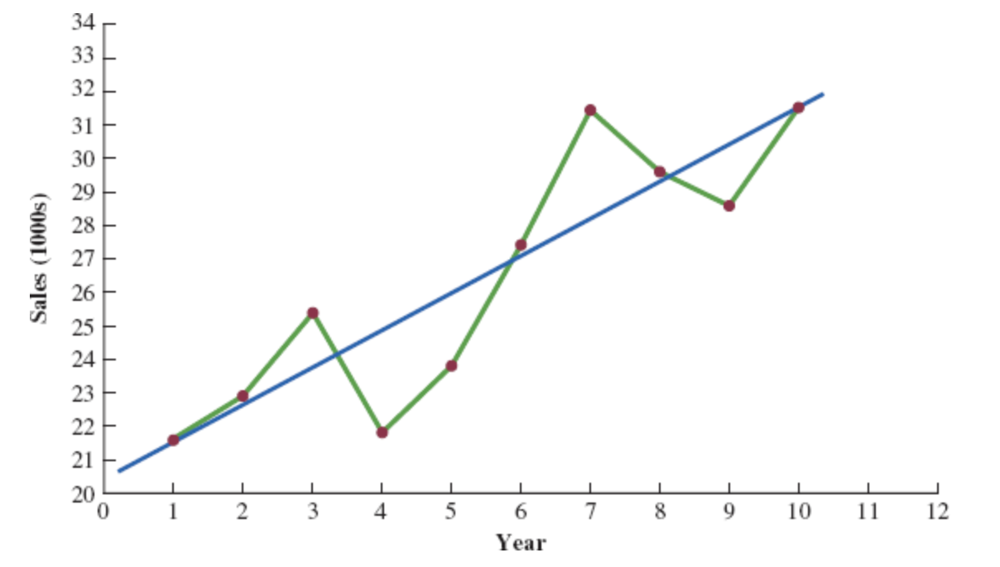
Although it shows some up and down movement over the past 10 years, we can identify a linear trend line.
The trend line provides a reasonable approximation o the. long-run movement in the series.
We can use the simple linear regression method to develop such a linear trend line.
Linear Trend Regression
Linear Trend Equation
\[ \hat{Y_t} = b_0 + b_1 t, \quad t = 1, 2, \ldots \]
where:
- \(\hat{Y_t}\) = linear trend forecast of mean response for period t
- \(b_0\) = estimated intercept of the linear trend line
- \(b_1\) = estimated slope of the linear trend line
- \(t\) = time period
Linear Trend Regression
Computing the Slope and Intercept for a Linear Trend
\[ b_1 = \frac{\sum_{t=1}^{n} (t - \bar{t})(Y_t - \bar{Y})}{\sum_{t=1}^{n} (t - \bar{t})^2}, \quad \text{or} \quad b_1 = \frac{\sum_{t=1}^{n} t Y_t - \left( \frac{\sum_{t=1}^{n} t \sum_{t=1}^{n} Y_t}{n} \right)}{\sum_{t=1}^{n} t^2 - \left( \frac{\left(\sum_{t=1}^{n} t\right)^2}{n} \right)} \]
\[ b_0 = \bar{Y} - b_1 \bar{t} \]
Where:
- \(Y_t\) = value of the time series in period \(t\)
- \(n\) = number of time periods (number of observations)
- \(\bar{Y}\) = average value of the time series
- \(\bar{t}\) = average value of \(t\)
Linear Trend Regression: Example
To compute the linear trend equation for the bicycle sales time series, we begin the calculations by computing \(\bar{t}\) and \(\bar{Y}\).
\[ \bar{t} = \frac{\sum_{t=1}^{n} t}{n} = \frac{55}{10} = 5.5 \]
\[ \bar{Y} = \frac{\sum_{t=1}^{n} Y_t}{n} = \frac{264.5}{10} = 26.45 \]
Using these values, and the data, we can compute: the slope and intercept.
\[ b_1 = \frac{\sum_{t=1}^{n} (t - \bar{t})(Y_t - \bar{Y})}{\sum_{t=1}^{n} (t - \bar{t})^2} = \frac{90.75}{82.5} = 1.1 \]
\[ b_0 = \bar{Y} - b_1 \bar{t} = 26.45 - 1.1(5.5) = 20.4 \]
Therefore, the linear trend equation is:
\[ \hat{Y}_t = 20.4 + 1.1t \]
Linear Trend Regression: Example
Bicycle Sales Time Series
| \(t\) | \(Y_1\) | \(t - \bar{t}\) | \(Y_1 - \bar{Y}\) | \((t - \bar{t})(Y_1 - \bar{Y})\) | \((t - \bar{t})^2\) |
|---|---|---|---|---|---|
| 1 | 21.6 | -4.5 | -4.85 | 21.825 | 20.25 |
| 2 | 22.9 | -3.5 | -3.55 | 12.425 | 12.25 |
| 3 | 25.5 | -2.5 | -0.95 | 2.375 | 6.25 |
| 4 | 21.9 | -1.5 | -4.55 | 6.825 | 2.25 |
| 5 | 23.9 | -0.5 | -2.55 | 1.275 | 0.25 |
| 6 | 27.5 | 0.5 | 1.05 | 0.525 | 0.25 |
| 7 | 31.5 | 1.5 | 5.05 | 7.575 | 2.25 |
| 8 | 29.7 | 2.5 | 3.25 | 8.125 | 6.25 |
| 9 | 28.6 | 3.5 | 2.15 | 7.525 | 12.25 |
| 10 | 31.4 | 4.5 | 4.95 | 22.275 | 20.25 |
| Totals | 264.5 | 90.750 | 82.5 |
Linear Trend Regression: Example
Linear Trend Equation for the Bicycle Sales Time Series:
\[ \hat{Y}_t = 20.4 + 1.1t \]
The slope 1.1 indicates that over the past 10 years the firm experienced an average growth in sales of about 1100 units per year.
If we assume that the past 10-year trend in sales is a good indicator of the future, this trend equation can be used to develop forecasts for future time periods. Substituting \(t = 11\) into the equation yields next year’s trend projection or forecast, \(\hat{Y}_{11}\).
\[ \hat{Y}_t = 20.4 + 1.1 \times 11 = 32.5 \]
Thus, using trend projection, we would forecast sales of 32,500 bicycles next year.
Linear Trend Regression: Example
Bicycle Sales Time Series
| Year | Sales | Forecast | Forecast error | Squared Forecast Error |
|---|---|---|---|---|
| 1 | 21.6 | 21.5 | 0.1 | 0.01 |
| 2 | 22.9 | 22.6 | 0.3 | 0.09 |
| 3 | 25.5 | 23.7 | 1.8 | 3.24 |
| 4 | 21.9 | 24.8 | -2.9 | 8.41 |
| 5 | 23.9 | 25.9 | -2.0 | 4.00 |
| 6 | 27.5 | 27.8 | 0.5 | 0.25 |
| 7 | 31.5 | 28.1 | 3.4 | 11.56 |
| 8 | 29.7 | 29.2 | 0.5 | 0.25 |
| 9 | 28.6 | 30.3 | -1.7 | 2.89 |
| 10 | 31.4 | 31.4 | 0.0 | 0.00 |
| Total | 264.5 | 30.7 |
\[ \text{MSE} = \frac{\sum_{t=1}^{n} (Y_t - F_t)^2}{n} = \frac{30.7}{10} = 3.07 \]
Regression Output: Example Excel
- Enter/Access Data: Open the file Bicycle. The data are in cells A2:B11 and labels are in cells A1:B1.
Step 1: Click the Data tab on the Ribbon
Step 2: In the Analyze group, click Data Analysis
Step 3: Choose Regression from the list of Analysis Tools
Step 4: When the Regression dialog box appears:
- Enter
B1:B11in the Input Y Range box - Enter
A1:A11in the Input X Range box - Select the check box for Labels
- Select the check box for Confidence Level
- Output Range:
- Enter
A13in the Output Range box (to identify the upper left corner of the section of the worksheet where the output will appear)
- Enter
- Click OK
- Enter

Nonlinear Trend Regression
Nonlinear Trend Regression
Sometimes time series have a curvilinear or nonlinear trend.
A variety of nonlinear functions can be used to develop an estimate of the trend in a time series.
One example is this quadratic trend equation:
\[ \hat{Y_t} = b_0 + b_1t + b_2t^2 \]
- Another example is this exponential trend equation:
\[ \hat{Y_t} = b_0(b_1)^t \]
Nonlinear Trend Regression: Example
Cholesterol Revenue Time Series
The data regarding cholesterol sales over a period of 10 years is tabulated below. A curvilinear function appears to be needed to model the long-term trend.
| Year | Revenue ($ millions) |
|---|---|
| 1 | 23.1 |
| 2 | 21.3 |
| 3 | 27.4 |
| 4 | 34.6 |
| 5 | 33.8 |
| 6 | 43.2 |
| 7 | 59.5 |
| 8 | 64.4 |
| 9 | 74.2 |
| 10 | 99.3 |

Nonlinear Trend Regression: Example Excel
- Enter/Access Data: Open the file Cholesterol.
Step 1: Click the Data tab on the Ribbon
Step 2: In the Analyze group, click Data Analysis
Step 3: Choose Regression from the list of Analysis Tools
Step 4: When the Regression dialog box appears:
- Enter
C1:C11in the Input Y Range box - Enter
A1:B11in the Input X Range box - Select the check box for Labels
- Select the check box for Confidence Level
- Output Range:
- Enter
A13in the Output Range box (to identify the upper left corner of the section of the worksheet where the output will appear)
- Enter
- Click OK
- Enter
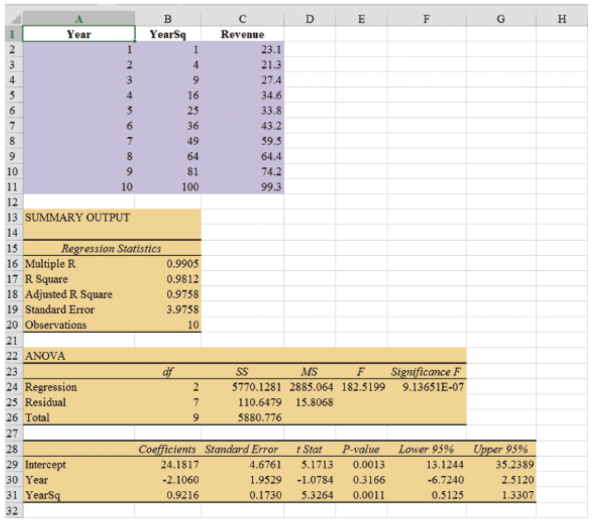
The estimated regression equation is:
\[ \hat{Y}_t = 24.1817 - 2.1060t + 0.9216t^2 \]
The forecast of sales revenue for year 11 is:
\[ \hat{Y}_t = 24.1817 - 2.1060(11) + 0.9216(11)^2 = 112.53, \quad \text{or} \quad \approx \text{\$112.5 million}. \]
Nonlinear Trend Regression: Example Excel
Steps for Creating a Scatter Plot with Trendline
- Enter/Access Data: Open the file Cholesterol
- Step 1: Select cells B2:B11
- Step 2: Click the Insert tab on the Ribbon
- Step 3: In the Charts group, click the Insert Scatter (X, Y) or Bubble Chart button
- Step 4: When the list of scatter diagram subtypes appears, click the Scatter button (the chart in the upper left corner)
- Step 5: Click OK; the scatter diagram will appear in the current worksheet
- Step 6: Position the mouse pointer over any data point in the scatter diagram, right-click, and choose Add Trendline
- Step 7: In the Format Trendline dialog box:
- Choose Polynomial from the Trend/Regression Type list
- Enter 2 in the Order box
- Choose Display Equation on chart
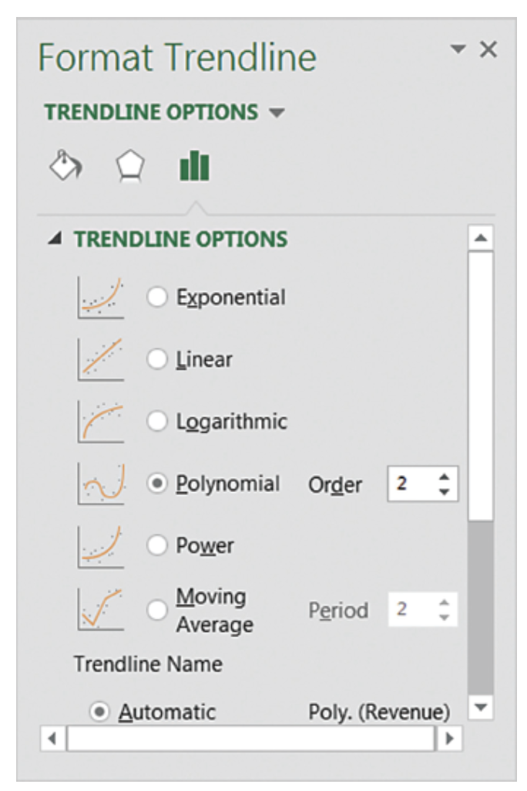

Seasonality Without Trend
Seasonality Without Trend
When seasonality exists, we need to incorporate it into our forecasting models to ensure accurate forecasts.
We will first look at the case of a seasonal time series with no trend and then discuss how to model seasonality with trend.
Seasonal patterns are recognized by seeing the same repeating pattern of highs and lows over successive and short periods of time (within a “short” period of time).
A seasonal pattern might occur within a day, week, month, quarter, year, or some other interval no greater than a year.
A seasonal pattern does not necessarily refer to the four seasons of the year (spring, summer, fall, and winter).
Seasonality Without Trend: Example
| Year | Quarter | Sales |
|---|---|---|
| 1 | 1 | 125 |
| 1 | 2 | 153 |
| 1 | 3 | 106 |
| 1 | 4 | 88 |
| 2 | 1 | 118 |
| 2 | 2 | 161 |
| 2 | 3 | 133 |
| 2 | 4 | 102 |
| 3 | 1 | 138 |
| 3 | 2 | 144 |
| 3 | 3 | 113 |
| 3 | 4 | 80 |
| 4 | 1 | 109 |
| 4 | 2 | 137 |
| 4 | 3 | 125 |
| 4 | 4 | 109 |
| 5 | 1 | 130 |
| 5 | 2 | 165 |
| 5 | 3 | 128 |
| 5 | 4 | 96 |

Seasonality Without Trend: Example
The time series plot does not clearly indicate any long-term trend in sales.
However, close inspection of the plot does reveal a seasonal pattern.
- The first and third quarters have moderate sales,
- the second quarter has the highest sales, and
- the fourth quarter tends to be the lowest quarter in terms of sales.
Seasonality Without Trend: Example
Recall that dummy variables can be used to deal with categorical independent variables in a multiple regression model.
We will treat the season as a categorical variable.
Recall that when a categorical variable has \(k\) levels, \(k - 1\) dummy variables are required.
If there are four seasons, we have the following dummy variables with \(Qtr4\) being the reference level:
\[ \text{Qtr1} = \begin{cases} 1 & \text{if Quarter 1} \\ 0 & \text{otherwise} \end{cases} \quad \text{Qtr2} = \begin{cases} 1 & \text{if Quarter 2} \\ 0 & \text{otherwise} \end{cases} \quad \text{Qtr3} = \begin{cases} 1 & \text{if Quarter 3} \\ 0 & \text{otherwise} \end{cases} \]
Seasonality Without Trend: Example
| Year | Quarter | Qtr1 | Qtr2 | Qtr3 | Sales |
|---|---|---|---|---|---|
| 1 | 1 | 1 | 0 | 0 | 125 |
| 1 | 2 | 0 | 1 | 0 | 153 |
| 1 | 3 | 0 | 0 | 1 | 106 |
| 1 | 4 | 0 | 0 | 0 | 88 |
| 2 | 1 | 1 | 0 | 0 | 118 |
| 2 | 2 | 0 | 1 | 0 | 161 |
| 2 | 3 | 0 | 0 | 1 | 133 |
| 2 | 4 | 0 | 0 | 0 | 102 |
| 3 | 1 | 1 | 0 | 0 | 138 |
| 3 | 2 | 0 | 1 | 0 | 144 |
| 3 | 3 | 0 | 0 | 1 | 113 |
| 3 | 4 | 0 | 0 | 0 | 80 |
| 4 | 1 | 1 | 0 | 0 | 109 |
| 4 | 2 | 0 | 1 | 0 | 137 |
| 4 | 3 | 0 | 0 | 1 | 125 |
| 4 | 4 | 0 | 0 | 0 | 109 |
| 5 | 1 | 1 | 0 | 0 | 130 |
| 5 | 2 | 0 | 1 | 0 | 165 |
| 5 | 3 | 0 | 0 | 1 | 128 |
| 5 | 4 | 0 | 0 | 0 | 96 |
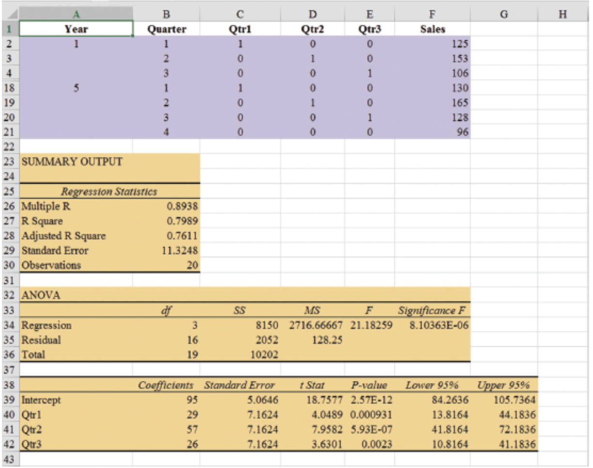
Seasonality Without Trend: Example
- General Form of Estimated Regression Equation
\[ \hat{Y} = b_0 + b_1(Qtr1) + b_2(Qtr2) + b_3(Qtr3) \]
- Estimated Regression Equation
\[ \text{Forecasted Sales} = 95.0 + 29.0(Qtr1) + 57.0(Qtr2) + 26.0(Qtr3) \]
Forecast of Mean Quarterly Sales in Year 6
- Quarter 1: Sales = 95 + 29(1) + 57(0) + 26(0) = 124
- Quarter 2: Sales = 95 + 29(0) + 57(1) + 26(0) = 152
- Quarter 3: Sales = 95 + 29(0) + 57(0) + 26(1) = 121
- Quarter 4: Sales = 95 + 29(0) + 57(0) + 26(0) = 95
Seasonality Without Trend: Example
Note that we could have obtained the quarterly forecasts for next year simply by computing the average number of umbrellas sold in each quarter:
| Year | Quarter 1 | Quarter 2 | Quarter 3 | Quarter 4 |
|---|---|---|---|---|
| 1 | 125 | 153 | 106 | 88 |
| 2 | 118 | 161 | 133 | 102 |
| 3 | 138 | 144 | 113 | 80 |
| 4 | 109 | 137 | 125 | 109 |
| 5 | 130 | 165 | 128 | 96 |
| Average | 124 | 152 | 121 | 95 |
Nonetheless, the regression output provides additional information that can be used to assess the accuracy of the forecast and determine the significance of the results.
Seasonality and Trend
Seasonality and Trend: Example
Smartphone Quarterly Sales Data (in Thousands)
| Year | Quarter | Sales (1000s) |
|---|---|---|
| 1 | 1 | 4.8 |
| 2 | 4.1 | |
| 3 | 6.0 | |
| 4 | 6.5 | |
| 2 | 1 | 5.8 |
| 2 | 5.2 | |
| 3 | 6.8 | |
| 4 | 7.4 | |
| 3 | 1 | 6.0 |
| 2 | 5.6 | |
| 3 | 7.5 | |
| 4 | 7.8 | |
| 4 | 1 | 6.3 |
| 2 | 5.9 | |
| 3 | 8.0 | |
| 4 | 8.4 |
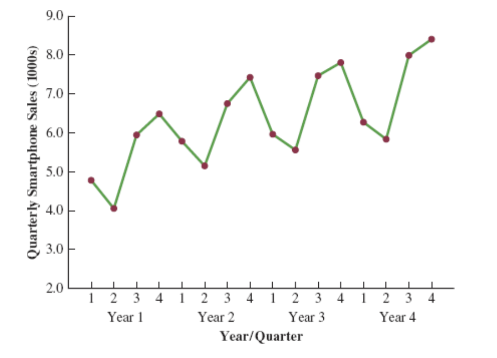
Seasonality and Trend: Example
Multiple Regression Equation for Seasonal Effects and Trend
The general form of the estimated multiple regression equation for modeling both the quarterly seasonal effects and the linear trend in the smartphone time series is as follows:
\[ \hat{Y}_t = b_0 + b_1 \text{Qtr1} + b_2 \text{Qtr2} + b_3 \text{Qtr3} + b_4 t \]
where
- \(\hat{Y}_t\) = estimate or forecast of sales in period \(t\)
- Qtr1 = 1 if time period \(t\) corresponds to the first quarter of the year; 0 otherwise
- Qtr2 = 1 if time period \(t\) corresponds to the second quarter of the year; 0 otherwise
- Qtr3 = 1 if time period \(t\) corresponds to the third quarter of the year; 0 otherwise
- \(t\) = time period
Seasonality and Trend: Example
Quarterly Sales Data with Indicators and Period
| Year | Quarter | Qtr1 | Qtr2 | Qtr3 | Period | Sales (1000s) |
|---|---|---|---|---|---|---|
| 1 | 1 | 1 | 0 | 0 | 1 | 4.8 |
| 2 | 0 | 1 | 0 | 2 | 4.1 | |
| 3 | 0 | 0 | 1 | 3 | 6.0 | |
| 4 | 0 | 0 | 0 | 4 | 6.5 | |
| 2 | 1 | 1 | 0 | 0 | 5 | 5.8 |
| 2 | 0 | 1 | 0 | 6 | 5.2 | |
| 3 | 0 | 0 | 1 | 7 | 6.8 | |
| 4 | 0 | 0 | 0 | 8 | 7.4 | |
| 3 | 1 | 1 | 0 | 0 | 9 | 6.0 |
| 2 | 0 | 1 | 0 | 10 | 5.6 | |
| 3 | 0 | 0 | 1 | 11 | 7.5 | |
| 4 | 0 | 0 | 0 | 12 | 7.8 | |
| 4 | 1 | 1 | 0 | 0 | 13 | 6.3 |
| 2 | 0 | 1 | 0 | 14 | 5.9 | |
| 3 | 0 | 0 | 1 | 15 | 8.0 | |
| 4 | 0 | 0 | 0 | 16 | 8.4 |

Seasonality and Trend: Example
General Form of Estimated Regression Equation
\[ \hat{Y} = b_0 + b_1 Qtr1 + b_2 \cdot Qtr2 + b_3 \cdot Qtr3 + b_4 \cdot t \]
Where \(t\) is the time period \(t = 1, 2, \ldots\)
Forecast for Time Period 17 (Quarter 1 in Year 5)
\[ \text{Sales} = 6.07 - 1.36(1) - 2.03(0) - .304(0) + .146(17) = 7.19 \]
Forecast for Time Period 18 (Quarter 2 in Year 5)
\[ \text{Sales} = 6.07 - 1.36(0) - 2.03(1) - .304(0) + .146(18) = 6.67 \]
Forecast for Time Period 19 (Quarter 3 in Year 5)
\[ \text{Sales} = 6.07 - 1.36(0) - 2.03(0) - .304(1) + .146(19) = 8.54 \]
Forecast for Time Period 20 (Quarter 4 in Year 5)
\[ \text{Sales} = 6.07 - 1.36(0) - 2.03(0) - .304(0) + .146(20) = 8.99 \]
Thus, accounting for the seasonal effects and the linear trend in smartphone sales, the estimates of quarterly sales in year 5 are 7190, 6670, 8540, and 8990.
Seasonality and Trend: Example
The dummy variables in the estimated multiple regression equation provide four estimated multiple regression equations, one for each quarter.
\[ \text{Quarter 1: Sales} = 6.07 - 1.36(1) - 2.03(0) - .304(0) + .146t = 4.71 + .146t \]
Similarly, if time period \(t\) corresponds to quarters 2, 3, and 4, the estimates of quarterly sales are:
\[ \begin{align*} \text{Quarter 2: Sales} & = 6.07 - 1.36(0) - 2.03(1) - .304(0) + .146t = 4.04 + .146t \\ \text{Quarter 3: Sales} & = 6.07 - 1.36(0) - 2.03(0) - .304(1) + .146t = 5.77 + .146t \\ \text{Quarter 4: Sales} & = 6.07 - 1.36(0) - 2.03(0) - .304(0) + .146t = 6.07 + .146t \end{align*} \]
Interpretation of the Regression Coefficients
The slope of the trend line for each quarterly forecast equation is .146, indicating a growth in sales of about 146 smartphones per quarter.
The only difference in the four equations is that they have different intercepts.
For instance, the intercept for the quarter 1 equation is 4.71 and the intercept for the quarter 4 equation is 6.07. Thus, sales in quarter 1 are
\[ 4.71 - 6.07 = -1.36 \]
or 1360 smartphones less than in quarter 4.
In other words, the estimated regression coefficient for Qtr1 provides an estimate of the difference in sales between quarter 1 and quarter 4.
Time Series Decomposition
Time Series Decomposition: Motivation
Understanding what is really going on with a time series often depends upon the use of deseasonalized data.
For example, we might be interested in learning whether electrical power consumption is increasing in our area.
Suppose we learn that electric power consumption in September is down 3% from the previous month. Is it correct to conclude that the electric power consumption is decreasing?
We must be careful with such information, because whenever a seasonal influence is present, such comparisons may be misleading if the data have not been deseasonalized.
The fact that electric power consumption is down 3% from August to September might be only the seasonal effect associated with a decrease in the use of air conditioning and not because of a long-term decline in the use of electric power.
Indeed, after adjusting for the seasonal effect, we might even find that the use of electric power increased.
Many other time series, such as unemployment statistics, home sales, and retail sales, are subject to strong seasonal influences. It is important to deseasonalize such data before making a judgment about any long-term trend.
Time Series Decomposition
Time series decomposition can be used to separate or decompose a time series. It assumes that \(Y_t\), the actual time series value at period \(t\), is a function of three components:
- A trend component
- A seasonal component
- An irregular or error component
How these three components are combined to generate the observed values of the time series depends upon whether we assume the relationship is best described by an additive or a multiplicative model.
Choosing Between Additive and Multiplicative Models
If the seasonal fluctuations change over time, growing larger as the sales volume increases because of a long-term linear trend, then a multiplicative model should be used.
Many business and economic time series follow this pattern.
Additive Decomposition Model
An additive model is appropriate in situations where the seasonal fluctuations do not depend upon the level of the time series.
If the sizes of the seasonal fluctuations in earlier time periods are about the same as the sizes of the seasonal fluctuations in later time periods, an additive model is appropriate.
Additive Decomposition Model
An additive decomposition model takes the following form:
\[ Y_t = Trend_t + Seasonal_t + Irregular_t \]
where
\(Trend_t\) = trend value at time period \(t\)
\(Seasonal_t\) = seasonal value at time period \(t\)
\(Irregular_t\) = irregular value at time period \(t\)
In an additive model, the values for the three components are simply added together to obtain the actual time series value \(Y_t\).
The irregular or error component accounts for the variability in the time series that cannot be explained by the trend and seasonal components.
Multiplicative Decomposition Model
A multiplicative decomposition model takes the following form:
\[ Y_t = Trend_t \times Seasonal_t \times Irregular_t \]
where
\(Trend_t\) = trend value at time period \(t\)
\(Seasonal_t\) = seasonal index at time period \(t\)
\(Irregular_t\) = irregular index at time period \(t\)
The Census Bureau uses a multiplicative model in conjunction with its methodology for deseasonalizing time series.
Multiplicative Decomposition Model
In this model, the trend, seasonal, and irregular components are multiplied to give the value of the time series.
Trend is measured in units of the item being forecast.
The seasonal and irregular components are measured in relative terms:
- Values above 1.00 indicate effects above the trend.
- Values below 1.00 indicate effects below the trend.
Multiplicative Decomposition Model: Example
Sales are lowest in the second quarter of each year and increase in quarters 3 and 4.
We conclude that a seasonal pattern exists for the smartphone sales time series.
Procedures: Overview
The computational procedure to identify each quarter’s seasonal influence begins by computing a moving average to remove the combined seasonal and irregular effects from the data, leaving us with a time series that contains only trend and any remaining random variation not removed by the moving average calculations.
Steps 1-2: Calculate centered moving averages (Initial deseasonalized data).
Step 3: Determine the seasonal and irregular factors for each time series value. (Individual factors due to seasonality and irregularity).
Step 4: Determine Seasonal Index (SI) for each season (Updating the factors).
Step 5: Determine the deseasonalized data (Update the deseasonalized data using SI).
Step 6: Determine the Trend Component of the deseasonalized data (Model trend).
Step 7: Determine the deseasonalized predictions (based on the Trend Component). (Forecast trend).
Step 8: Add the seasonality to the predictions.
Multiplicative Decomposition Model: Example (Step 1)
Moving Average Calculation
Because we are working with a quarterly series, we will use four data values in each moving average.
The moving average calculation for the first four quarters of the smartphone sales data is:
\[ \text{First moving average} = \frac{4.8 + 4.1 + 6.0 + 6.5}{4} = \frac{21.4}{4} = 5.35 \]
Multiplicative Decomposition Model: Example (Step 1)
Moving Average Calculation
Note that the moving average calculation for the first four quarters yields the average quarterly sales over year 1 of the time series.
Continuing the moving average calculations, we next add the 5.8 value for the first quarter of year 2 and drop the 4.8 for the first quarter of year 1.
Thus, the second moving average is:
\[ \text{Second moving average} = \frac{4.1 + 6.0 + 6.5 + 5.8}{4} = \frac{22.4}{4} = 5.60 \]
Multiplicative Decomposition Model: Example (Step 1)
Moving Average Calculation
Similarly, the third moving average calculation is:
\[ (6.0 + 6.5 + 5.8 + 5.2) / 4 = 5.875 \]
Multiplicative Decomposition Model: Example (Step 1)
Before we proceed with the moving average calculations for the entire time series, let us return to the first moving average calculation, which resulted in a value of 5.35.
The 5.35 value is the average quarterly sales volume for year 1.
As we look back at the calculation of the 5.35 value, associating 5.35 with the “middle” of the moving average group makes sense.
Multiplicative Decomposition Model: Example (Step 2)
Period Alignment with Moving Averages
Note that with four quarters in the moving average, there is no middle period.
The 5.35 value really corresponds to period 2.5, the last half of quarter 2 and the first half of quarter 3.
Similarly, if we go to the next moving average value of 5.60, the middle period corresponds to period 3.5, the last half of quarter 3 and the first half of quarter 4.
Multiplicative Decomposition Model: Example (Step 2)
Centering Moving Averages
The two moving average values we computed do not correspond directly to the original quarters of the time series.
We can resolve this by computing the average of the two moving averages.
The center of the first moving average is period 2.5, and the center of the second moving average is period 3.5.
By averaging these, we center the moving average at quarter 3, exactly where it should be.
Multiplicative Decomposition Model: Example (Step 2)
Centered Moving Average Calculation
This moving average is referred to as a centered moving average.
- Thus, the centered moving average for period 3 is:
\[ \frac{5.35 + 5.60}{2} = 5.475 \]
- Similarly, the centered moving average value for period 4 is:
\[ \frac{5.60 + 5.875}{2} = 5.738 \]
Multiplicative Decomposition Model: Example (Step 2)
Centered Moving Average Calculations
Summary of the moving average and centered moving average calculations for the smartphone sales data.
| Year | Quarter | Sales (1000s) | Four-Quarter Moving Average | Centered Moving Average |
|---|---|---|---|---|
| 1 | 1 | 4.8 | ||
| 1 | 2 | 4.1 | ||
| 5.350 | ||||
| 1 | 3 | 6.0 | 5.475 | |
| 5.600 | ||||
| 1 | 4 | 6.5 | 5.738 | |
| 5.875 | ||||
| 2 | 1 | 5.8 | 5.975 | |
| 6.075 | ||||
| 2 | 2 | 5.2 | 6.188 | |
| 6.300 | ||||
| 2 | 3 | 6.8 | 6.325 | |
| 6.350 | ||||
| 2 | 4 | 7.4 | 6.400 | |
| 6.450 | ||||
| 3 | 1 | 6.0 | 6.538 | |
| 6.625 | ||||
| 3 | 2 | 5.6 | 6.675 | |
| 6.725 | ||||
| 3 | 3 | 7.5 | 6.763 | |
| 6.800 | ||||
| 3 | 4 | 7.8 | 6.838 | |
| 6.875 | ||||
| 4 | 1 | 6.3 | 6.938 | |
| 7.000 | ||||
| 4 | 2 | 5.9 | 7.075 | |
| 7.150 | ||||
| 4 | 3 | 8.0 | ||
| 4 | 4 | 8.4 |
Multiplicative Decomposition Model: Example (Step 3)
What do the centered moving averages tell us about this time series?
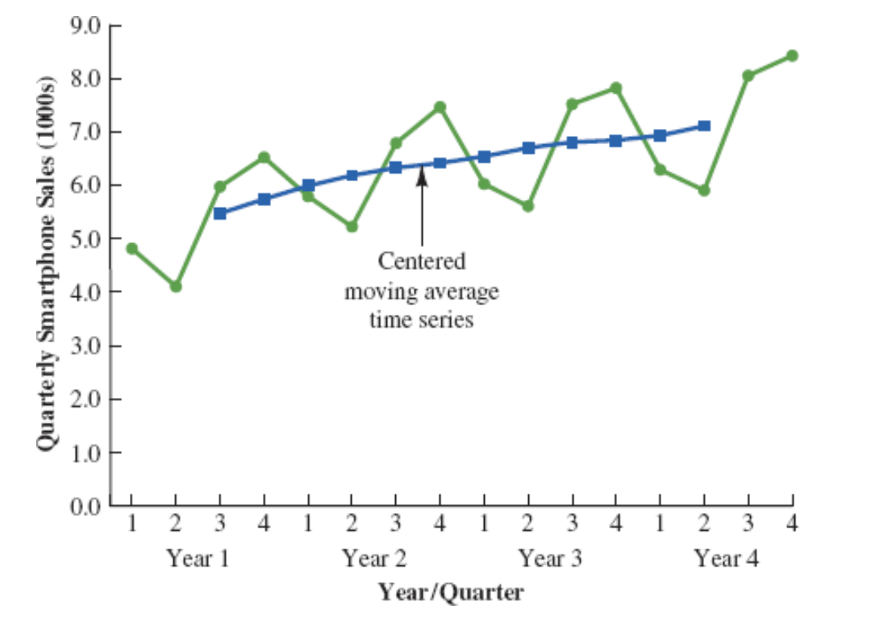
The Figure shows a time series plot of the actual time series values and the centered moving average values.
Note particularly how the centered moving average values tend to “smooth out” both the seasonal and irregular fluctuations in the time series.
The centered moving averages represent the trend in the data and any random variation that was not removed by using moving averages to smooth the data.
Multiplicative Decomposition Model: Example (Step 4)
The multiplicative decomposition model is:
\[ Y_t = Trend_t \times Seasonal_t \times Irregular_t \]
By dividing each side of this equation by the trend component \(T_t\), we can identify the combined seasonal-irregular effect in the time series.
\[ \frac{Y_t}{Trend_t} = \frac{Trend_t \times Seasonal_t \times Irregular_t}{Trend_t} = Seasonal_t \times Irregular_t \]
Multiplicative Decomposition Model: Example (Step 4)
For example, the third quarter of year 1 shows a trend value of 5.475 (the centered moving average).
So:
\[ \frac{6.0}{5.475} = 1.096 \]
This is the combined seasonal-irregular value.
Multiplicative Decomposition Model: Example (Step 4)
Seasonal-irregular values for the entire time series.
| Year | Quarter | Sales (1000s) | Centered Moving Average | Seasonal-Irregular Value |
|---|---|---|---|---|
| 1 | 1 | 4.8 | ||
| 1 | 2 | 4.1 | ||
| 1 | 3 | 6.0 | 5.475 | 1.096 |
| 1 | 4 | 6.5 | 5.738 | 1.133 |
| 2 | 1 | 5.8 | 5.975 | 0.971 |
| 2 | 2 | 5.2 | 6.188 | 0.840 |
| 2 | 3 | 6.8 | 6.325 | 1.075 |
| 2 | 4 | 7.4 | 6.400 | 1.156 |
| 3 | 1 | 6.0 | 6.538 | 0.918 |
| 3 | 2 | 5.6 | 6.675 | 0.839 |
| 3 | 3 | 7.5 | 6.763 | 1.109 |
| 3 | 4 | 7.8 | 6.838 | 1.141 |
| 4 | 1 | 6.3 | 6.938 | 0.908 |
| 4 | 2 | 5.9 | 7.075 | 0.834 |
| 4 | 3 | 8.0 | ||
| 4 | 4 | 8.4 |
Multiplicative Decomposition Model: Example (Step 4)
Seasonal-Irregular Values for Third Quarter
Consider the seasonal-irregular values for the third quarter: 1.096, 1.075, and 1.109.
Seasonal-irregular values greater than 1.00 indicate effects above the trend estimate, while values below 1.00 indicate effects below the trend estimate.
The three seasonal-irregular values for quarter 3 show an above-average effect in the third quarter.
Multiplicative Decomposition Model: Example (Step 4)
Averaging to Estimate Seasonal Influence
Since the year-to-year fluctuations in the seasonal-irregular values are primarily due to random error, we can average the computed values to eliminate the irregular influence and obtain an estimate of the third-quarter seasonal influence.
\[ \text{Seasonal effect of quarter 3} = \frac{1.096 + 1.075 + 1.109}{3} = 1.09 \]
Multiplicative Decomposition Model: Example (Step 4)
Seasonal-Irregular Values and Seasonal Indexes
| Quarter | Seasonal-Irregular Values | Seasonal Index |
|---|---|---|
| 1 | 0.971, 0.918, 0.908 | 0.93 |
| 2 | 0.840, 0.839, 0.834 | 0.84 |
| 3 | 1.096, 1.075, 1.109 | 1.09 |
| 4 | 1.133, 1.156, 1.141 | 1.14 |
The seasonal indexes for the four quarters are 0.93, 0.84, 1.09, and 1.14.
The best sales quarter is the fourth quarter, with sales averaging 14% above the trend estimate.
The worst, or slowest, sales quarter is the second quarter; its seasonal index of 0.84 shows that the sales average is 16% below the trend estimate.
The seasonal component corresponds clearly to the intuitive expectation that smartphone sales increase when a new school year begins (quarter 3) and for the holiday season (quarter 4).
Multiplicative Decomposition Model: Example (Step 4)
One final adjustment is sometimes necessary in obtaining the seasonal indexes.
The multiplicative model requires that the average seasonal index equal 1.00, so the sum of the four seasonal indexes must equal 4.00.
In other words, the seasonal effects must even out over the year.
The average of the seasonal indexes in our example is equal to 1.00, so this type of adjustment is not necessary.
Multiplicative Decomposition Model: Example (Step 4)
Making Adjustments (If Required)
In cases where adjustment is necessary:
- Multiply each seasonal index by the number of seasons divided by the sum of the unadjusted seasonal indexes.
For quarterly data, this means:
\[ \text{Adjusted Seasonal Index} = \frac{4}{\text{sum of the unadjusted seasonal indexes}} \]
Deseasonalizing the Time Series (Step 5)
A time series that has had the seasonal effects removed is referred to as a deseasonalized time series, and the process of using the seasonal indexes to remove the seasonal effects from a time series is referred to as deseasonalizing the time series.
Using a multiplicative decomposition model, we deseasonalize a time series by dividing each observation by its corresponding seasonal index.
The multiplicative decomposition model is:
\[ Y_t = Trend_t \times Seasonal_t \times Irregular_t \]
When we divide each time series observation \(Y_t\) by its corresponding seasonal index, the resulting data show only trend and random variability (the irregular component).
Deseasonalized Sales Data Table (Step 5)
| Year | Quarter | Time Period | Sales (1000s) | Seasonal Index | Deseasonalized Sales |
|---|---|---|---|---|---|
| 1 | 1 | 1 | 4.8 | 0.93 | 5.16 |
| 1 | 2 | 2 | 4.1 | 0.84 | 4.88 |
| 1 | 3 | 3 | 6.0 | 1.09 | 5.50 |
| 1 | 4 | 4 | 6.5 | 1.14 | 5.70 |
| 2 | 1 | 5 | 5.8 | 0.93 | 6.24 |
| 2 | 2 | 6 | 5.2 | 0.84 | 6.19 |
| 2 | 3 | 7 | 6.8 | 1.09 | 6.24 |
| 2 | 4 | 8 | 7.4 | 1.14 | 6.49 |
| 3 | 1 | 9 | 6.0 | 0.93 | 6.45 |
| 3 | 2 | 10 | 5.6 | 0.84 | 6.67 |
| 3 | 3 | 11 | 7.5 | 1.09 | 6.88 |
| 3 | 4 | 12 | 7.8 | 1.14 | 6.84 |
| 4 | 1 | 13 | 6.3 | 0.93 | 6.77 |
| 4 | 2 | 14 | 5.9 | 0.84 | 7.02 |
| 4 | 3 | 15 | 8.0 | 1.09 | 7.34 |
| 4 | 4 | 16 | 8.4 | 1.14 | 7.37 |
Deseasonalized Sales Plot (Step 5)

Deseasonalizing the Time Series (Step 5)
Identifying Trend in Deseasonalized Data
The graph of the deseasonalized smartphone sales time series shown in the Figure appears to have an upward linear trend.
To identify this trend, we will fit a linear trend equation to the deseasonalized time series.
The only difference is that we will be fitting a trend line to the deseasonalized data instead of the original data.
Deseasonalizing the Time Series: Linear Trend Equation (Step 6)
Recall that for a linear trend, the estimated regression equation can be written as:
\[ T_t = b_0 + b_1 t \]
where
- \(T_t\): linear trend forecast in period \(t\)
- \(b_0\): intercept of the linear trend line
- \(b_1\): slope of the trend line
- \(t\): time period
Deseasonalizing the Time Series: Fitting a Linear Trend Line (Step 6)
To fit a linear trend line to the deseasonalized data, the only change is that the deseasonalized time series values are used instead of the observed values \(Y_t\) in computing \(b_0\) and \(b_1\).
Using Excel’s Regression tool, the estimated linear trend equation is:
\[ \text{Deseasonalized Sales} = 5.10 + 0.148t \]
Deseasonalizing the Time Series: Interpretation of the Slope (Step 6)
The slope of 0.148 indicates that over the past 16 quarters, the firm averaged a deseasonalized growth in sales of about 148 smartphones per quarter.
If we assume that the past 16-quarter trend in sales data is a reasonably good indicator of the future, this equation can be used to develop a trend projection for future quarters.
Deseasonalizing the Time Series: Example Projection (Step 7)
Substituting \(t = 17\) into the equation yields next quarter’s deseasonalized trend projection, \(T_{17}\):
\[ T_{17} = 5.10 + 0.148(17) = 7.616 \]
Thus, using the deseasonalized data, the linear trend forecast for next quarter (period 17) is 7616 smartphones.
Similarly, the deseasonalized trend forecasts for the next three quarters (periods 18, 19, and 20) are 7764, 7912, and 8060 smartphones, respectively.
Seasonal Adjustments (Step 8)
The final step in developing the forecast when both trend and seasonal components are present is to use the seasonal indexes to adjust the deseasonalized trend projections.
For the smartphone sales example, we have a deseasonalized trend projection for the next four quarters.
Now, we must adjust the forecast for the seasonal effect.
The seasonal index for the first quarter of year 5 (\(t = 17\)) is 0.93, so we obtain the quarterly forecast by multiplying the deseasonalized forecast based on trend \((T_{17} = 7616)\) by the seasonal index (0.93). Thus, the forecast for the next quarter is \(7616 \times 0.93 = 7083\).
Seasonal Adjustments: Quarterly Forecasts Table (Step 8)
| Year | Quarter | Deseasonalized Trend Forecast | Seasonal Index | Quarterly Forecast |
|---|---|---|---|---|
| 5 | 1 | 7616 | 0.93 | \(7616 \times 0.93 = 7083\) |
| 5 | 2 | 7764 | 0.84 | \(7764 \times 0.84 = 6522\) |
| 5 | 3 | 7912 | 1.09 | \(7912 \times 1.09 = 8624\) |
| 5 | 4 | 8060 | 1.14 | \(8060 \times 1.14 = 9188\) |
The high-volume fourth quarter has a 9188-unit forecast, and the low-volume second quarter has a 6522-unit forecast.
Cyclical Component
Mathematically, the multiplicative model can be expanded to include a cyclical component.
\[ Y_t = Trend_t \times Cyclical_t \times Seasonal_t \times Irregular_t \]
The cyclical component, like the seasonal component, is expressed as a percentage of trend.
This component is attributable to multiyear cycles in the time series.
It is analogous to the seasonal component but over a longer period. However, due to the length of time involved, obtaining enough relevant data to estimate the cyclical component is often difficult.
Cyclical Component: Challenges
Cycles usually vary in length, making it difficult to identify or separate cyclical effects from long-term trend effects.
In practice, these effects are often combined and referred to as a combined trend-cycle component.
Summary
Summary
Some key takeaways from this session:
Time Series Analysis: Understand patterns (trend, seasonality, cycles) to forecast future values.
Forecast Accuracy: Key measures include MAE, MSE, and MAPE for assessing model performance.
Smoothing Techniques: Moving averages and exponential smoothing help in handling horizontal patterns.
Trend and Seasonality: Apply decomposition and regression for more complex time series with trends and seasonal variations.
Summary
Important: The following table is not exhaustive; it merely illustrates the examples discussed in the lecture. Remember that within the General Linear Model framework, these methods can be combined and adapted based on the specific objectives of the analysis.
| Forecasting Method / Pattern | Horizontal | Linear Trend | Non-linear Trend | Seasonal | Seasonal + Trend |
|---|---|---|---|---|---|
| 1. Naive Forecast | X | ||||
| 2. Hist. Data Average Method | X | ||||
| 3. Moving Average (\(k\) and \(1/k\)) | X | ||||
| 4. Weighted Moving Average (\(k\), weights should sum to 1) | X | ||||
| 5. Exponential Smoothing (\(\alpha\)) | X | ||||
| 6. Regression Model: Lag Variable | X | X | X | X | |
| 7. Regression Model: Time as Independent Variable | X | ||||
| 8. Regression Model: Time as Independent Variable with Transformation | X | ||||
| 9. Regression Model: Season as Independent Variable | X | ||||
| 10. Regression Model: Time and Season as Independent Variables | X |